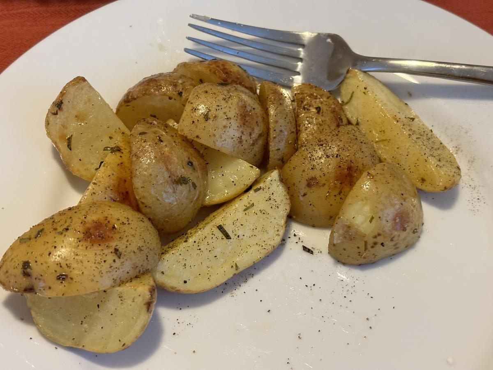

Based on https://damndelicious.net/2015/08/12/lemon-rosemary-roasted-potatoes
Personal rating: 5 / 5

3 pounds red or yellow potatoes, halved or quartered until evenly sized (such as Yukon)
2 Tbsp olive oil
1 lemon, juice and zest
3 cloves garlic, minced
1 tsp dried rosemary
Kosher salt and freshly ground black pepper, to taste
(Optional) 2 Tbsp chopped parsley leaves
(Optional) 2 sprigs fresh rosemary